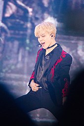

Park Ji-min (Korean: 박지민; born on October 13, 1995), better known mononymously as Jimin, is a South Korean singer, songwriter, and dancer. In 2013, he debuted as a member of the South Korean boy band BTS, under the record label Big Hit Entertainment.
Early Life and Education Park Ji-min (Korean: 박지민) was born on October 13, 1995 in Geumjeong District, Busan, South Korea. His immediate family includes mother, father, and a younger brother. When he was a child, he attended Busan's Hodong Elementary School and Yonsan Middle School. During middle school, he attended Just Dance Academy and learned popping and locking dance. Prior to becoming a trainee, Jimin studied contemporary dance at Busan High School of Arts and was a top student in the modern dance department. After a teacher suggested he audition with an entertainment company, it led him to Big Hit Entertainment. Once he passed the auditions in 2012, he transferred to Korean Arts High School, graduating in 2014. Jimin is currently enrolled at Global Cyber University.
BTS On June 13, 2013, Jimin made his debut as a member of BTS with the release of the single "No More Dream". In the group, Jimin holds the position of vocalist and dancer. Under BTS, he has released two solo tracks: "Lie" and "Serendipity". The song "Lie" was released in 2016 in the album Wings. It was described as stunning and dramatic, conveying dark undertones and emotions that helped reflect the overall concept of the album. In contrast, "Serendipity" from the album Love Yourself: Her released in 2017 was soft and sensual, unraveling the joy, conviction, and curiosity of love.
All three of Jimin's solos "Serendipity", "Lie" and "Serendipity (Full Length Edition)" surpassed fifty million streams on Spotify, making him the only Korean act to have three solo songs over 50 million streams. The songs were also the only solo songs by a BTS member in Official Chart's 20 most streamed BTS songs in the UK. Jimin's song "Promise" (2018) saw SoundCloud's Biggest 24-Hour Debut Ever, surpassing the record set by Drake's "Duppy Freestyle", according to SoundCloud. In 2018, he was awarded the fifth-class Hwagwan Order of Cultural Merit by the President of South Korea along with other members of the group.
Jimin released his first solo song outside of BTS releases, "Promise", on December 30, 2018, for free on BTS' SoundCloud page. The song, described by Billboard as a "mellow pop ballad", was composed by Jimin and Big Hit Entertainment producer Slow Rabbit, with the latter also producing the track. "Promise" features lyrics written by Jimin and fellow BTS member RM. On December 24, 2020, Jimin released another solo track titled "Christmas Love" to celebrate his childhood memories of the holidays.
 Jimin's vocals have been described as delicate and sweet. He is regarded as an exceptional dancer among the members of the group and in K-pop in general. Noelle Devoe of Elite Daily wrote that he is often praised for his "smooth and elegant movements" as well as his charm on stage. In the BTS documentary Burn the Stage, Jimin said that he thinks of himself as a perfectionist, stating even the smallest mistakes on stage makes him feel guilty and stresses him. He has cited singer Rain as one of his inspirations and reasons why he wanted to become both a singer and performer.
In 2016, Jimin was ranked as the 14th most popular idol in an annual survey conducted by Gallup Korea. He ranked 7th in 2017, before ranking 1st consecutively in 2018 and 2019. In 2018, Jimin was the ninth most-tweeted about celebrity and the eighth most-tweeted about musician in the world. He was picked as the seventeenth best boyband member in history by The Guardian. From January to May 2018, Jimin won the monthly Peeper x Billboard Award for "Top K-Pop Artist – Individual". Peeper x Billboard is a collaboration between the Peeper social media app and Billboard Korea that collects fan votes for their favorite K-pop artists and announces monthly winners. The prize was a donation to the charity UNICEF in his name. In 2019, he received a plaque of appreciation from the Cultural Conservation Society for performing buchaechum, a traditional Korean fan dance, during the 2018 Melon Music Awards and helping spread the dance outside of Korea.
From 2016 to 2018, Jimin supported graduates of Busan Hodong Elementary School, his alma mater, by covering uniform expenses. After news of the school's closing was released, he donated summer and winter middle school uniforms to the final graduates and gifted autographed albums to the entire student body. In early 2019, Jimin donated 100 million Korean won (roughly 88,000 US dollars) to the Busan Department of Education to help support lower income students. Of the total, ₩30 million (roughly US$23,000) went to Busan Arts High School, Jimin's alma mater. In July 2020, Jimin donated another 100 million Korean won, this time to the Jeonnam Future Education Foundation, for the purpose of creating a scholarship fund for talented but financially struggling students from South Jeolla Province.